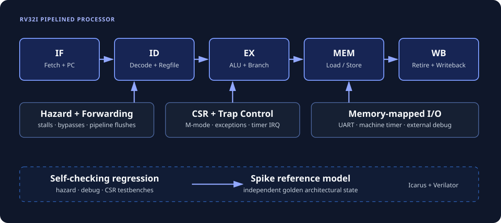
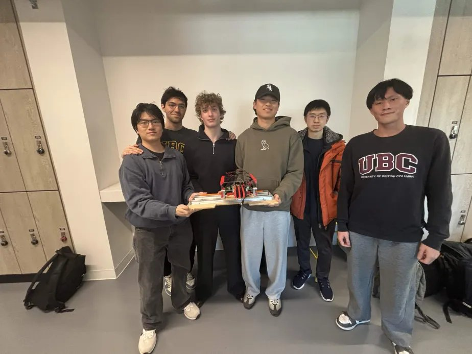
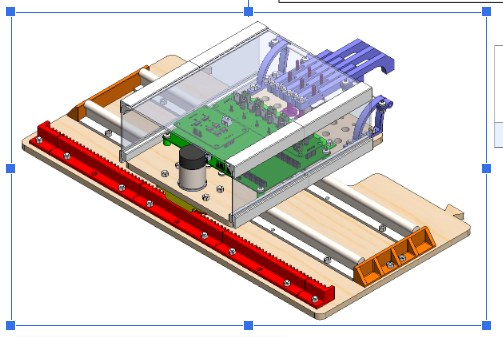

Projects
Hardware and firmware projects, from pipelined RISC-V processors and a hand-built SIMT accelerator to real-time embedded control.
Newest project
RV32I Pipelined Processor Core
A five-stage RV32I processor core that grew from a single-cycle design into a pipelined system with privileged control flow, peripherals, and external debugging.
- Implemented instruction fetch, decode, execute, memory, and writeback stages with forwarding, load-use stalls, control-hazard flushing, and distance-3 RAW-hazard handling
- Added M-mode CSRs, synchronous exceptions, machine-timer interrupts, memory-mapped UART, and external halt/resume debug
- Verified hazard, debug, and CSR behavior with self-checking directed regressions under both Icarus Verilog and Verilator, using Spike-generated architectural state as the independent golden reference
- Built a hazard-biased UVM environment with drivers, monitors, assertions, and a retirement scoreboard; it has elaborated against the Accellera library and is awaiting execution in a UVM-capable simulator
- Documented real RTL failures uncovered during verification, including a distance-3 stale-register hazard and an incorrect-path flush following
dret

View sourceFlagship
SIMT Matrix Multiply Accel
A fixed-function SIMT accelerator computing parameterized N×N matrix multiplication across multiple hardware cores, with all RTL hand-written — no vendor IP. First milestone toward a full SIMT GPU: it doesn't have an ISA yet.
- Designed a 4-core shared-memory architecture with round-robin arbitration across read and write ports
- Built a dispatcher FSM to assign work blocks to cores, with race-condition guards for same-cycle done/start handoffs
- Implemented an 8-state per-core scheduler driving independent A/B operand fetches and a fused multiply-add pipeline
- Parameterized memory read latency to bridge a simulation/hardware mismatch that produced silent output corruption on real hardware
- Verified every module with unit testbenches and a full-system ModelSim testbench, then confirmed the matrix-multiply readback against a golden model on hardware via the Quartus In-System Memory Content Editor
 View source
View source
Research
RISC-V Run-Control Debugging
Undergraduate research reverse-engineering how run-control debugging works in a RISC-V core, then extending a processor to support it.
- Reverse-engineered execution-based debugging in the CV32E20 (an Ibex-derived core) and published an open-source tutorial covering the full GDB–OpenOCD–RISC-V Debug Module workflow
- Extended a single-cycle RV32I processor with run-control debugging in SystemVerilog: a debug FSM, four debug CSRs, ebreak/dret decoding, and next-PC redirection for halt and resume
- Verified the halt–park–resume sequence, including dpc capture and restoration, with a self-checking Verilator testbench emulating Debug Module requests
- Work recognized by Prof. David Harris, co-author of Digital Design and Computer Architecture, as a potential reference for an upcoming processor-debug chapter
Flagship
FPGA iPod
Finite state machines that read audio data from onboard flash memory and stream it to a DAC for playback — simulating the core functionality of an iPod, controlled over a PS/2 keyboard.
- Designed an Address Handler FSM and a Flash Reader FSM, communicating through a start-finish protocol, to calculate addresses and stream audio samples from flash
- Built PS/2 keyboard control:
Estarts the song,Dstops it,F/Bplay forward/reverse,Rrestarts, and KEY0–KEY2 adjust playback speed - Extended the system with a DSP audio-strength meter: a PicoBlaze interrupt routine accumulates 256 samples, averages them by a bit shift, and drives an LED readout of signal intensity in real time
- Verified both FSMs in ModelSim, then confirmed correct behavior live on hardware with the SignalTap Logic Analyzer
Team Project
Piano-Playing Robot
A robot that plays piano: a rack-and-pinion platform carries a bank of solenoid-driven fingers along the keyboard, striking keys under six solenoids (three black-key, three white-key) while a DC motor with encoder feedback positions the carriage.
- Led firmware on the STM32 (NUCLEO-C051C8): closed-loop PWM motor control with encoder feedback for rail positioning, and precisely timed solenoid actuation for key strikes
- Built the serial link between a Python GUI and the firmware, parsing MIDI files into timed note/position sequences for playback
- Integrated a custom motor driver board and solenoid driver board (PCB design by teammates Ben Heyfitch and David Tang) distributing 12V/5V power to the motor and six solenoids
- Tuned homing behavior and corrected carriage overshoot through iterative on-hardware testing


Nios II DDS / LFSR / Clock-Domain-Crossing System
Custom Avalon-MM peripherals for a Nios II soft-processor system built in Platform Designer: a direct digital synthesis waveform generator and an LFSR-based interrupt source, bridged across clock domains by custom synchronizers.
- Built a DDS waveform generator: a 32-bit phase accumulator driving a sine/cosine lookup table, with square and sawtooth outputs derived from the same phase
- Designed an LFSR to generate a pseudo-random interrupt source for the Nios II processor
- Implemented two-flop clock-domain-crossing synchronizers bridging the Nios II and 50MHz board clock domains in both directions
- Verified every module in ModelSim, then confirmed the LFSR and CDC paths on hardware with SignalTap
RC4 Deciphering Circuit
A decryption circuit targeting the RC4 stream cipher, using a brute-force approach to explore the entire keyspace and identify the correct key.
- Parallelized the search across four independent cores, each responsible for a distinct segment of the key domain; once any core finds the key, all others stop immediately
- Designed three per-core state machines that communicate with the core's datapath controller using a start-finish protocol, implementing RC4's key-scheduling algorithm (KSA)
- Used the Quartus In-System Memory Content Editor to inspect RAM/ROM in real time and read the recovered plaintext back out as an ASCII message
- Verified KSA behavior and end-to-end decryption with ModelSim testbenches, then confirmed on hardware with SignalTap